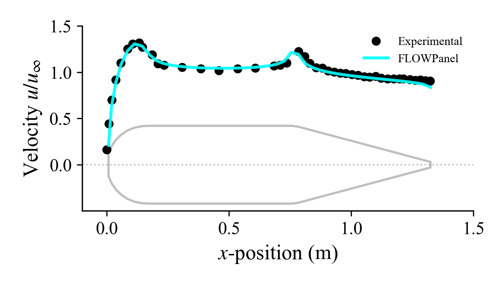

Slice
FLOWPanel provides the following function to obtain the solution field along a slice along a body:
FLOWPanel.slicefield — Functionslicefield(body::AbstractBody, fieldname::String,
position::Number, direction::Vector, row::Bool)Return a slice of the field fieldname in body corresponding to the row or column ("row" is the first dimension of the grid, "column" is the second dimension) that is the closest to position calculated as the projection of the average cell position in the direction direction.
Example: For a wing with its span aligned along the y-axis, the pressure along a slice of the wing at the spanwise position y=0.5 is obtained as slicefield(wing, "Cp", 0.5, [0, 1, 0], false).
slicefield(body::AbstractBody, controlpoints::Matrix,
fieldname::String,
position::Number, direction::Vector, row::Bool)Same thing, but with the option of providing the control points as to save avoid memory allocation.
Now we process the solution to plot the surface velocity along a slice of the body of revolution.
import PyPlot as plt
import LaTeXStrings: @L_str
# ----------------- COMPARISON TO EXPERIMENTAL DATA ----------------------------
#=
NOTE: Here we take a slice of the body and plot the velocity distribution
along the slice.
=#
# Get a slice of the body
position = 0.0 # Position of slice (slice along origin)
direction = [0, 1, 0] # Direction of slice (slice along the xz-plane)
row = false # If true, it slices along azimuth; centerline if false
slicepoints, sliceCps = pnl.slicefield(body, "Cp", position, direction, row)
slicepoints, sliceUs = pnl.slicefield(body, "U", position, direction, row)
# Plot experimental surface velocity distribution (figure 4.6 in Lewis 1991)
fig = plt.figure(figsize=[7, 5*0.8]*2/3)
ax = fig.gca()
filename = joinpath(pnl.examples_path, "data",
"centerbody-lewis-fig4p6.csv")
VoVinf_lewis = CSV.read(filename, DataFrame)
ax.plot(VoVinf_lewis[:, 1], VoVinf_lewis[:, 2], "ok",
markersize=5, label="Experimental")
# Plot surface velocity distribution of FLOWPanel
ax.plot(slicepoints[1, :], pnl.norm.(sliceUs)/magVinf, "-", color="cyan",
linewidth=2.0, alpha=0.9, label="FLOWPanel")
# Plot contour of centerbody
ax2 = ax.twinx()
xs = vcat(slicepoints[1, :], reverse(slicepoints[1, :]), slicepoints[1, 1])
ys = vcat(slicepoints[3, :], -reverse(slicepoints[3, :]), slicepoints[3, 1])
ax2.plot(xs, ys, "-k", alpha=0.25)
Surface velocity
